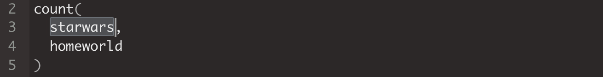

1.6 Els objectes
Ja hem vist anteriorment que a l’Environment hi ha emmagatzemats tots els objectes i funcions dels paquets que tenim carregats. Però també podem crear els nostres propis objectes i funcions. Ara mateix, si consultem a Global Environment, veurem que està buit.

Ara crearem objectes (deixarem les funcions per a un curs més avançat).
1.6.1 Crear objectes
Els objectes són un conjunt de dades que s’emmagatzemen a R amb un nom determinat. Per crear un objecte propi i emmagatzemar-lo al Global Environment, necessitarem el símbol <-8. A l’esquerra del símbol hi posarem el nom que adoptarà l’objecte i a la dreta hi posarem el contingut.
Pas 12. Crea objectes: A continuació crearem els objectes següents:
V <- 6
suma <- 2 + 2
Suma <- 3 + 4 + 6 + 6
V <- 25 / 5Comprova que aquests objectes s’han creat en el Global Environment:

En la creació d’objectes hi ha algunes regles bàsiques que cal tenir en compte:
- R distingeix entre majúscules (
Suma) i minúscules (suma). - Si guardem una operació (
3 + 4 + 6 + 6) en un objecte, R ens guardarà només el resultat de l’operació (19). - Si guardem un objecte amb el nom d’un objecte ja creat (
V), R sobreescriurà l’antic objecte. Així, en la segona vegada que hem creat un objecte amb nomV, R ha sobreescrit el nou resultat.
1.6.2 Consulta, reproducció i eliminació d’objectes
Amb els objectes podem fer quatre accions principals:
- Consultar els objectes que hem creat teclejant
ls(). - Reproduir el contingut d’un objecte teclejant-ne el nom seguit de Ctrl+Enter.
- Eliminar els objectes del Global Environment utilitzant la funció
rm(). Per exemple,rm(Suma, V)eliminarà els objectesSumaiVdel Global Environment. - Eliminar tots els objectes utilitzant
rm(list = ls()).
Pas 13. Reprodueix objectes: Podem reproduir el contingut dels objectes que acabem de crear si situem el cursor a la línia de codi de l’script que conté el nom de l’objecte que volem reproduir i premem Ctrl+Enter.
suma
Suma
VRecordem que, com hem vist anteriorment, també podem reproduir un objecte si el seleccionem a l’script i premem Ctrl+Enter.

Amb Windows, també el podem crear amb la drecera de teclat Alt+-. Amb Mac, Option+-.↩︎